Focused induced backscattered electrons - scanning electron microscopy
Focused ion beam- scanning electron microscopy
Focused ionized beam - scanning electron microscopy
COMBINED FIB–SEM TECHNIQUES: ADVANCED TOOLS TO RESOLVE MICROSTRUCTURES AND MINERALS PHASES IN SEDIMENTARY ROCKS
based on Richard Wirth and Luiz Morales
FIB the principle
FIB= focused ion beam
A FIB device basically resembles a SEM consisting of an ion source instead of an electron source, an ion column to focus
and to scan the beam and a sample stage to position the target material
The interaction of the accelerated ions with the target material produces both backscattered and secondary electrons that
can be detected with suitable electron detectors and used for imaging.
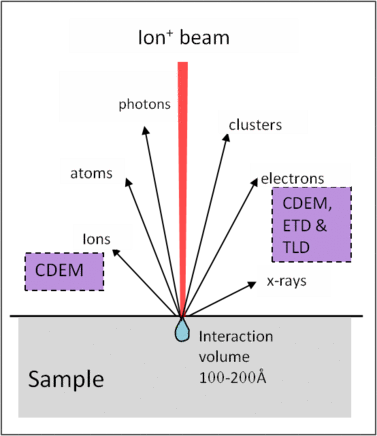
FIB the principle
FIB can be used as a machining tool to sputter cavities with exact dimensions
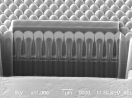
At the beginning, FIB was operated as a single beam device.
FIB the principle
Next logical step: the combination of an ion column FIB with an electron column SEM creating a DualBeam™ machine FIB/SEM.
The assembly of FIB and SEM extended the utilization of such a device tremendously because it combines the capabilities
of an SEM such as imaging, X-ray analysis and BSE with sputtering of material from the target.
FIB nanotomography, Slice&View 3D FIB/SEM, FIB Serial sectioning,…
FIB-nt: now possible to prepare a new surface normal to the sample surface => access to the third dimension of a sample.
FIB nanotomography / Slice&View
FIB-nt: now possible to prepare a new surface normal to the sample surface => access to the third dimension of a sample.
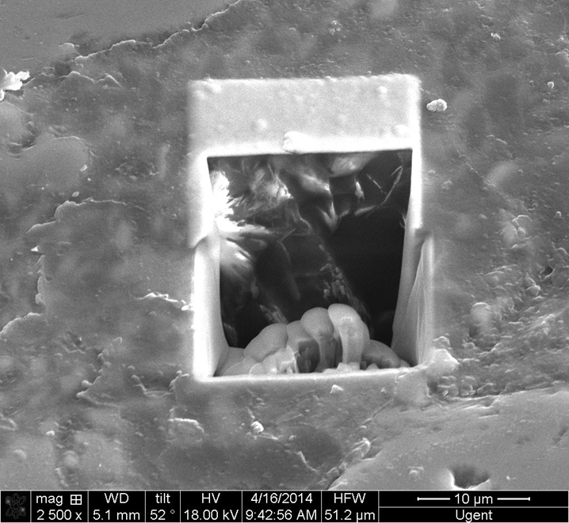
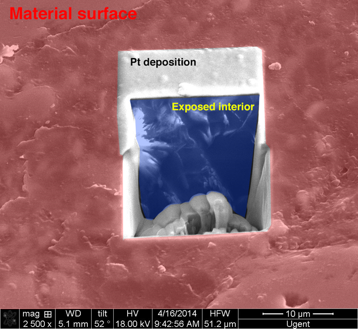
FIB nanotomography / Slice&View
The ion-polished front wall can be imaged and analyzed with EDS
Serial sectioning of the surface generates an image stack
=> 3D volume analysis
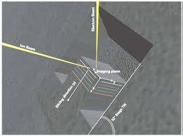
Principle of a FIB/SEM DualBeam
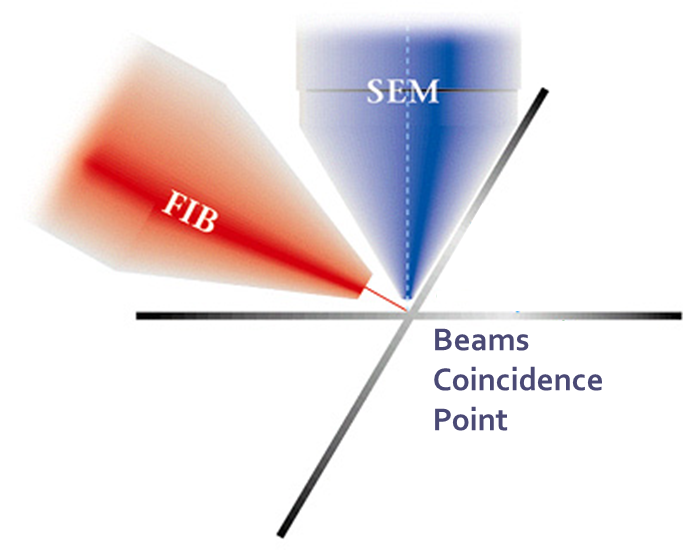
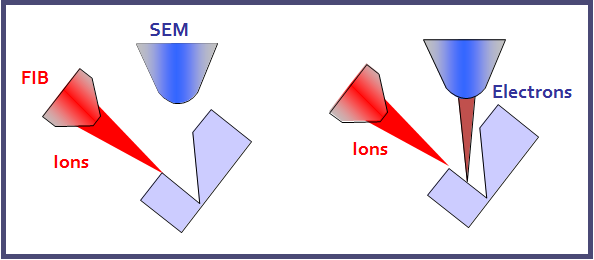
FIB-nanotomography / slice&view
Resolution same as SEM
Spatial resolution in z-direction limited to +/- 10 nm
Very small volumes (less than 50 x 50 x 50 µm3) (usually less)
Sectioning and polishing is the time-consuming step
example: 100 nm slice thickness x 200 slices = 20 µm, Aquisition time = +3 hours
Cuboid size: 1.6 x 1.8 x 1.7 µm
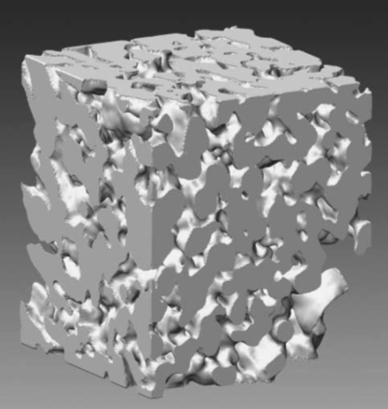
Holzer et al.: Three-dimensional analysis of porousBaTiO3 ceramics using FIB nanotomography, 2004 Journal of Microscopy,
Vol 216, pp. 84-95
FIB/SEM: Cross-Sectioning 3D Analysis
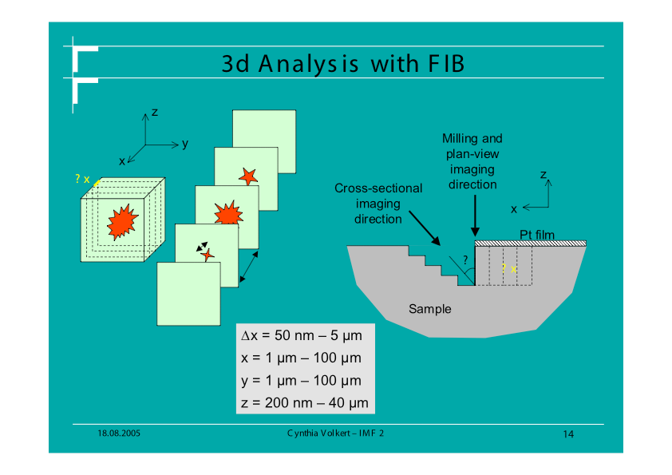
FIB/SEM applications
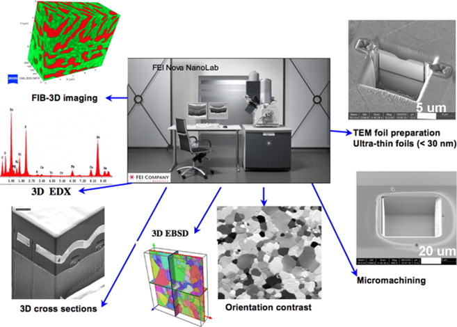
Drawbacks
Working with geological materials, there are some important disadvantages to the technique:
1. Representative volume?
Drawbacks
2. Unequal milling depth due to non-uniform material composition -> increased milling times
-> increased milling times
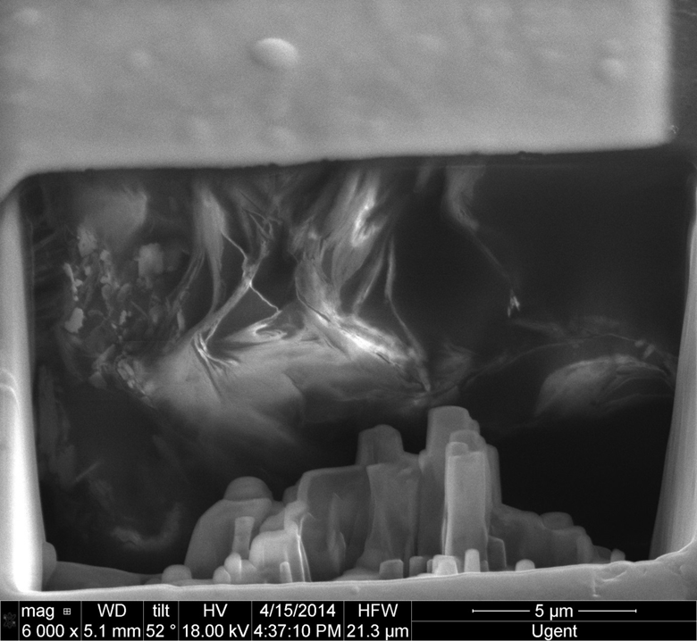
Drawbacks
3. Charge build-up due to non-conductive samples as no coating is possible between different image steps